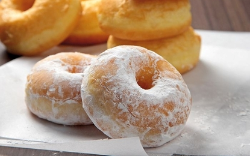

Donat
Bahan:
- 4 telur
- 250 gr gula pasir
- 1 sdt Emulsifier
- 1/2 sdt vanili bubuk
- 500 gr All Purpose Flour
- 50 gr Milk Powder
- 1 tsp garam
- 400 ml santan ( 200 ml santan + air )
- Topping sesuai selera: Gula tepung, Ceres, Susu Kental Manis, dll
- Minyak secukupnya
Cara Membuat:
- Campurkan telur, gula pasir, Emulsifier, dan vanili bubuk.
- Mixer sampai mengembang dengan kecepatan tinggi selama 8-10 menit.
- Masukan tepung terigu, susu bubuk, garam, santan.
- Mixer hingga tercampur rata dengan kecepatan rendah.
- Tuangkan adonan ke gelas ukur agar mudah menuangkannya ke cetakan.
- Nyalakan kompor dengan api sedang agar tidak cepat gosong.
- Panaskan minyak yang banyak hingga cetakan tenggelam bersama adonannya.
- Setelah cetakan donatnya panas lalu tuangkan adonan kurang lebih 3/4 cetakan lalu celupkan ke dalam minyak sambil digoyangkan, adonan akan terlepas dengan sendirinya.
- Lanjutkan dengan menuangkan adonan berikutnya.
- Goreng hingga kuning keemasan.
- Tambahkan toping sesuai selera.
- Selesai.